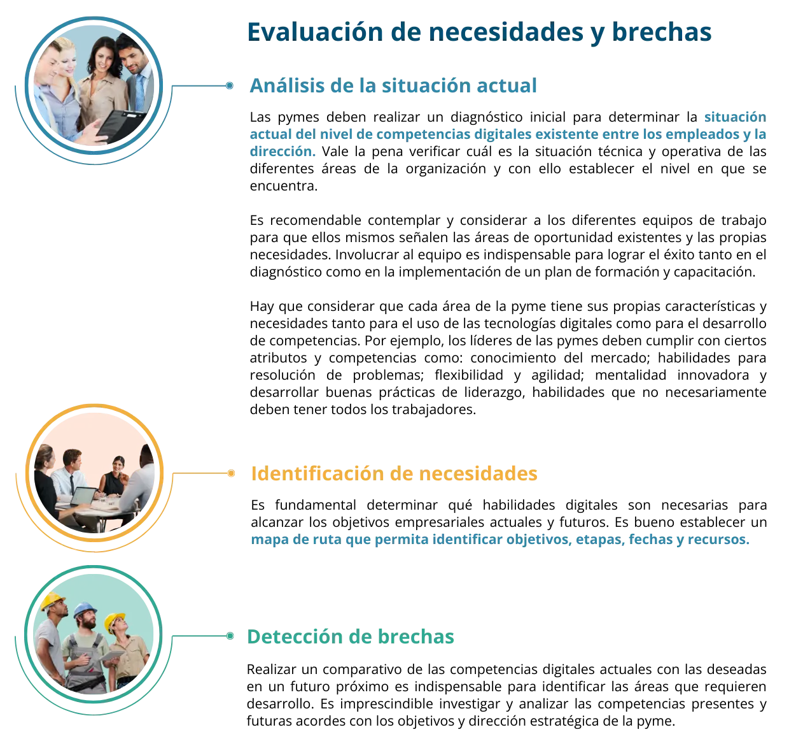

En el contexto de las pequeñas y medianas empresas (pymes) las competencias y habilidades digitales se refieren al conjunto de conocimientos, capacidades, habilidades y actitudes que permiten a los trabajadores y empresarios, utilizar eficazmente las tecnologías de información y comunicación (TIC).
En la era digital actual, las tecnologías de la información y comunicación (TIC) se han convertido en la columna vertebral de los sistemas empresariales al constituirse en factores determinantes para la mejora de su productividad, competitividad y eficiencia operativa.
Para las pymes, el uso de herramientas digitales permite optimizar sus operaciones, mejorar la comunicación y la colaboración, acceder a nuevos mercados y agilizar los procesos. De acuerdo con (Heredia, 2020) el uso de TIC en las pymes tiene impactos positivos, los más relevantes se detallan a continuación:
Transformación productiva: La adopción de las TIC en las pymes puede impulsar su transformación productiva permitiéndoles mejorar sus procesos internos, la relación con clientes y proveedores y la gestión de la información.
Automatización de procesos: Las herramientas tecnológicas permiten optimizar procesos a través de la automatización de tareas repetitivas, mejora de la gestión de inventarios y pedidos, así como optimizar la logística y reducir costos operativos.
Acceso a nuevos mercados. Las TIC brindan la oportunidad de acceder a nuevos mercados a través de plataformas digitales, redes sociales, comercio electrónico y marketing digital, facilitándoles la venta de productos y servicios a nivel nacional e internacional.
Innovación y competitividad: La incorporación de las TIC en las empresas fomenta la innovación de productos, servicios y modelos de negocio, lo que les ayuda a mantenerse competitivas en un entorno empresarial dinámico.
Gestión de la información: Las herramientas digitales facilitan la gestión eficiente de la información del negocio como datos de clientes, inventarios, ventas, finanzas, contabilidad, lo que contribuye a la toma de decisiones informada.
Toma de decisiones. El buen uso y aprovechamiento de las herramientas digitales contribuye a tomar decisiones informadas gracias al análisis de datos sobre clientes, productos, precios y estrategias de marketing.
La rápida evolución tecnológica y la competencia global exigen a las pymes adaptarse a los cambios y emprender acciones encaminadas al uso de las herramientas digitales que les faciliten mejorar su productividad y competitividad.
Para lograr dichos propósitos es crucial aprovechar al máximo las TIC para ello tienen que emprender acciones encaminadas al desarrollo de habilidades y competencias que les permitan adaptarse a los cambios, innovar y utilizar de manera efectiva dichas herramientas.
La Comisión Económica para América Latina (CEPAL) ha destacado la importancia del desarrollo de competencias de las pymes por el impacto que tienen en la productividad, creación de empleos, reducción de la pobreza y la desigualdad, e inserción a la economía global.
Un dato ilustrativo, la misma CEPAL estima que un aumento del 10% en las habilidades digitales de la fuerza laboral podría aumentar el PIB de la región en un 3%.
“El liderazgo de una organización es clave para poder diseñar y definir sus estrategias, carácter y asignación de recursos. Nyl en y Holmstrom (2015) señalan que las tecnologías digitales generan escenarios potenciales para la innovación de servicios y productos. Por lo tanto, las organizaciones necesitan desarrollar herramientas dinámicas que faciliten el uso de recursos, la experiencia del usuario, el desarrollo de habilidades comerciales y mayores propuestas de valor” (Henfridsson & Mathiassen, 2014)
Para superar los desafíos del siglo XXI las pymes deben emprender acciones encaminadas al desarrollo de competencias digitales lo cual no solo implica buscar la adquisición de conocimientos técnicos, sino identificar y aplicar un conjunto de habilidades transversales que mejoren la resiliencia y la competitividad, es decir, la capacidad de adaptarse a los cambios.
En el contexto de las pymes, las competencias hacen referencia al conjunto de conocimientos, capacidades o destrezas, habilidades y actitudes necesarias para utilizar eficazmente las tecnologías digitales en el ámbito laboral.
Organismos internacionales como la Organización para la Cooperación y el Desarrollo Económico (OECD, 2023) en su libro “OECD SME and Entrepeneurship Outlook 2023” enfatiza la necesidad de acelerar la transformación digital de las pymes a través del desarrollo de capacidades con una visión amplia que integre no solo las capacidades técnicas, sino aquellas que les permitan generar mayor resiliencia y competitividad.
Dichas competencias se caracterizan por su transversalidad y por el impacto que tienen en diferentes áreas de la pyme. Desde luego, las competencias varían de acuerdo con el sector y la naturaleza del negocio, aunque existen aquellas particularmente valiosas en el contexto de la Economía del dato que exigen una transformación digital.
Estas competencias y habilidades ponen el foco en el uso de herramientas digitales y en el manejo de los datos que les permitan procesarlos y convertirlos en información valiosa para la organización.
Las competencias digitales aluden a las capacidades que permiten a los individuos entender y utilizar las tecnologías digitales de manera efectiva y segura. Incluyen:
Alfabetización digital y manejo de datos: La capacidad de buscar, analizar, organizar, evaluar, interpretar, gestionar datos y compartir información a través de las tecnologías digitales.
El siguiente video realizado por Conecta Vinalopó profundiza en la Alfabetización digital:
https://www.youtube.com/watch?v=x-ZRZh_nP5I
Comunicación y colaboración en entornos digitales. Capacidad para interactuar, comunicar y colaborar a través de las tecnologías digitales con respeto a las normas y conductas propias de los entornos digitales (Netiqueta).
Competencia informacional: Habilidad para identificar, localizar, evaluar, organizar y crear información mediante tecnología digital.
Competencia mediática: Capacidad de analizar, evaluar y crear mensajes en diversos formatos y medios digitales. Implica la creación de contenido digital, incluye la habilidad para crear, desarrollar y gestionar una o varias identidades digitales para la construcción de la buena reputación de una marca, empresa o persona con respeto a la propiedad intelectual y los derechos de autor.
Seguridad digital y protección de datos: Conocimiento sobre la protección de datos personales y corporativos, y la implementación de prácticas adecuadas de ciberseguridad. Integra la protección de información y datos personales, así como la de dispositivos y la infraestructura digital.
Sugerimos ver el siguiente de video de competencias digitales, desarrollado por ConIngenio Innovación:
https://www.youtube.com/watch?v=KwoVJ2nsCz8
Se refieren a las habilidades técnicas específicas requeridas para operar herramientas y plataformas digitales. Algunas de las más relevantes para las pymes incluyen:
Manejo de software de oficina: Habilidad para utilizar aplicaciones de productividad como procesadores de texto, hojas de cálculo y presentaciones electrónicas, por citar las más básicas, aunque existen aquellas más especializadas como los CRM y ERP.
Gestión de redes sociales digitales: Capacidad para utilizar plataformas sociales para marketing, comunicación con clientes y gestión de la reputación de la marca, así como el procesamiento y análisis de los datos que ofrecen estas herramientas.
Analítica web y SEO: Habilidades para analizar el tráfico web y optimizar sitios web para motores de búsqueda.
Comercio electrónico y marketing digital: Conocimiento sobre la gestión de tiendas en línea, sistemas de pago y logística de envíos.
Ciberseguridad básica: Conocimientos fundamentales para proteger la información y los sistemas empresariales de ciberataques.
El alcance y manejo de las herramientas digitales que enlazan con las competencias y habilidades previamente señaladas se explican con detalle en las diferentes dimensiones y ejes temáticos de esta plataforma de Economía del dato. Por ejemplo, los temas de comunicación, gestión de redes sociales, analítica web, SEO y comercio electrónico se encuentran en la dimensión Comunicación y canales de venta; el manejo de software básico, sistemas y herramientas especializadas, se puede consultar en la dimensión Datos y analítica.
El desarrollo de las habilidades y competencias son fundamentales para adaptarse a los cambios rápidos en los mercados, innovar en los procesos de negocio, mejorar la productividad y competitividad y acceder a nuevas oportunidades comerciales.
Para que una pyme desarrolle de manera efectiva las habilidades y competencias digitales requeridas, debe emprender un ejercicio de planeación dirigida al fortalecimiento de su equipo de trabajo y en función de sus propias necesidades y requerimientos, para ello se sugieren los siguientes pasos.
Para el desarrollo de competencias y habilidades digitales se pueden considerar diversidad de estrategias, a continuación, se presentan algunas recomendaciones planteadas en “Políticas de fomento para la incorporación de tecnologías digitales en las micro, pequeñas y medianas empresas de América Latina. Revisión de experiencias y oportunidades” editado por la CEPAL. (Heredia, A. 2020).
Capacitación interna o externa: Las pymes deben destinar recursos para capacitar al personal. Es indispensable brindar capacitación y formación en el uso de herramientas digitales a los empleados de las pymes para que puedan aprovechar al máximo las TIC en sus rutinas laborales.
Programas de mentoría. Implementar programas de mentoría interna o externa puede contribuir al desarrollo de habilidades y competencias de los empleados, permitiéndoles aprender de profesionales más experimentaos en el ámbito digital.
Implementar programas de formación personalizados y acordes con las necesidades específicas de la empresa y sus empleados. Esto puede incluir cursos en línea, talleres presenciales o a distancia, webinar sobre herramientas y tecnologías relevantes, así como tutoriales habilitados en canales digitales.
Aprovechamiento de recursos externos: Para formación y actualización es recomendable verificar la disponibilidad de recursos externos como los cursos masivos en línea (MOOCs), por sus siglas en inglés, entre los que se encuentra Coursera, Unimooc, Miriada X, UnX, entre otras como Udemy, LinkedIn learning, Platzi, Modo Digital, que tienen un catálogo de cursos diseñados por expertos y que ofrecen un abanico de posibilidades de formación y desarrollo de habilidades digitales.
En el espacio de herramientas se presentan los nombres y direcciones web de consulta de las plataformas que ofrecen cursos especializados y que pueden ser de utilidad para el desarrollo de habilidades y competencias digitales.
Alianzas con instituciones educativas: Para acceder a recursos de capacitación especializados se recomienda establecer alianzas con organizaciones tecnológicas reconocidas y conocedoras de las herramientas y que puedan potenciar el conocimiento y las habilidades de los trabajadores de las pymes.
Actualización continua: El acelerado avance tecnológico exige a las pymes la actualización continua de las habilidades y competencias digitales, es imprescindible que los trabajadores se mantengan actualizados en el uso de las herramientas acorde con las nuevas tendencias tecnológicas.
Inversión en tecnología. Adquirir y utilizar herramientas tecnológicas adecuadas para mejorar la eficiencia y la productividad en los procesos internos y externos de la pyme. Esto puede incluir sistemas de gestión empresarial, plataformas de comunicación y colaboración, entre otros. (Felissia, 2022)
Adaptabilidad: Las pymes deben fomentar una cultura organizacional que promueva la adaptabilidad y la disposición a aprender nuevas habilidades digitales en un entorno en constante evolución.
Integración de competencias digitales en roles de liderazgo digital: Es importante asegurarse que los líderes, directivos o empresarios sean conscientes de la importancia del desarrollo de habilidades digitales y dar ejemplo de su adopción y uso en la empresa. Esto puede facilitar la implementación exitosa de iniciativas digitales en la organización. (Felissia, 2022)
Cultura basada en datos: Es importante fomentar una cultura organizacional que valore y utilice los datos para la toma de decisiones. Esto implica no solo contar con tecnología adecuada, sino también con empleados capacitados para interpretar y utilizar la información de manera efectiva.
Colaboración: Es deseable fomentar la colaboración y el trabajo en equipo en el desarrollo de habilidades, ello puede potenciar el aprendizaje y la implementación efectiva de las TIC en las pymes.
Participación en iniciativas gubernamentales y programas de apoyo: Algunos gobiernos y organizaciones ofrecen programas de apoyo y financiamiento para la capacitación encaminada al desarrollo de habilidades digitales. Las pymes pueden aprovechar estas oportunidades para fortalecer las competencias de su personal. (Del Do, 2023)
Promoción de la innovación: Fomentar una cultura organizacional que valore la innovación y la adopción de nuevas tecnologías. Esto puede implicar la creación de espacios para la experimentación y el desarrollo de ideas creativas que impulsen el uso efectivo de competencias digitales. (Felissia, 2022)
Del Do, A. M. (2023). Una propuesta para la Transformación Digital en las PYMES. Revista Electrónica del Instituto de Tecnología Aplicada de la Universidad Nacional de la Patagoia Austral, 7-21. Recuperado de https://publicaciones.unpa.edu.ar/index.php/RevITA/article/view/979/1047
Felissia, M. (2022). El liderazgo y las competencias digitales en la gestión de los recursos humanos de empresas Pyme de San Francisco, Córdoba. Revista de Ciencias Empresariales y Sociales , 102-120. Recuperado de https://publicacionescientificas.uces.edu.ar/index.php/empresarialesysociales/article/view/1485
Henfridsson, O., & Mathiassen, L. a. (marzo de 2014). Gestionar el cambio tecnológico en la era digital: el papel de los marcos arquitectónicos. Journal of Information Technology, 27-43. DOI: https://journals.sagepub.com/doi/10.1057/jit.2013.30
Heredia, A. (2020). Políticas de fomento para la incorporación de las tecnologías digitales en las micro, pequeñas y medianas empresas de América Latina: revisión de experiencias y oportunidades. (CEPAL, Ed.) Recuperado de https://cepal.org/es/publications: https://repositorio.cepal.org/items/deed0786-81fb-48cf-85e5-c2fab0685e0c
OECD. (2023). OECD SME and Entrepreneurship Outlook 2023. París, Francia: OECD.